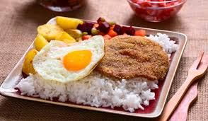

Salteñas
La salteña es un tipo de empanada de origen boliviano,1 comido como una merienda jugosa y rellena con carne, pollo u otras carnes, huevo duro, especias, y otros ingredientes, cocida al horno. En un recetario de 1917, "se conoce de las prácticas culinarias de la élite boliviana de finales del siglo XIX y principios del siglo XX" en la ciudad de Potosí, donde las salteñas abundan.2 Lo que diferencia a las salteñas bolivianas de otras empanadas latinoamericanas, es el ají la papa y el hecho de que son más jugosas que en otras partes. La salteña posee un relleno de diferentes legumbres, carne en trozos y suele venir con parte del líquido que queda de la preparación del jigote. Este producto se caracteriza por ser muy asequible, y estar en casi todas las ciudades de Bolivia, llegando a ser un aperitivo de media mañana para todos los bolivianos. Se consume principalmente en la mañana, siendo vendida y consumida en plazas y calles al paso.
Silpancho
Se compone de arroz, papas, una lonja circular de carne de vaca apanada y frita que cubre la mayor parte del plato y huevo frito.4 Suele venir con papas hervidas y después fritas, y una ensalada compuesta básicamente de cebolla, tomate y locoto en cubos pequeños en la parte superior a modo de salsa. Otras variantes llevan también zanahoria. El plato originalmente no llevaba arroz ni huevo y se llamaba bistec (palabra derivada de manera criolla de beef steak), pero fue Celia la Fuente Peredo (1924-2008) quien configuró el silpancho como ahora se le conoce. Fuente Peredo es reconocida por el departamento de Cochabamba como la creadora del plato.